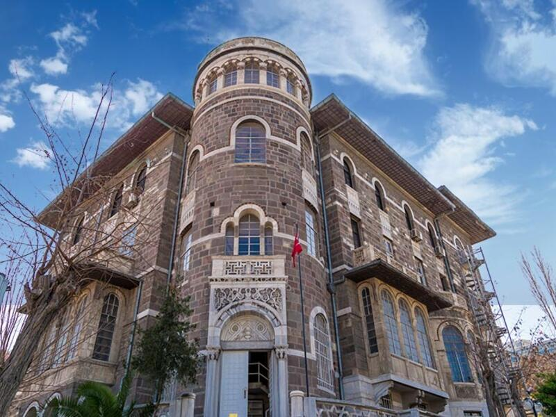
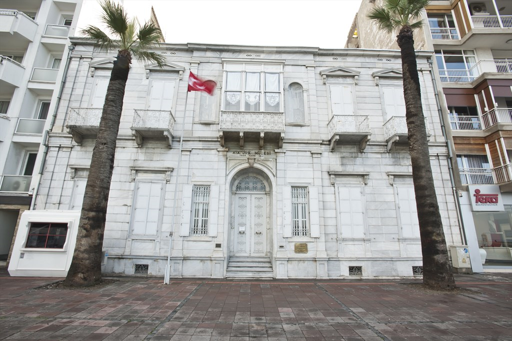
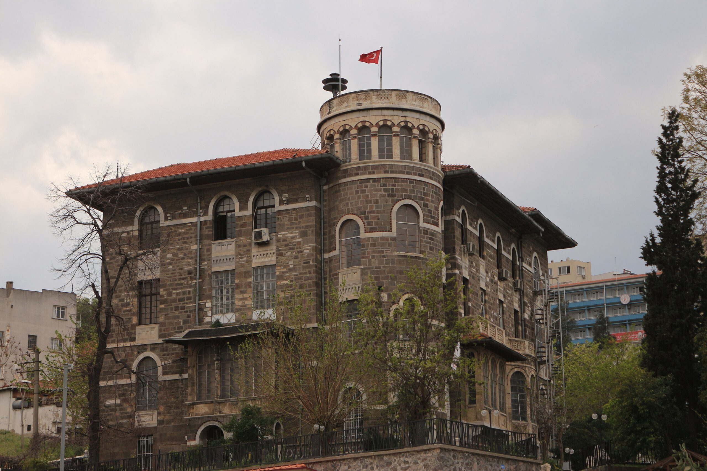
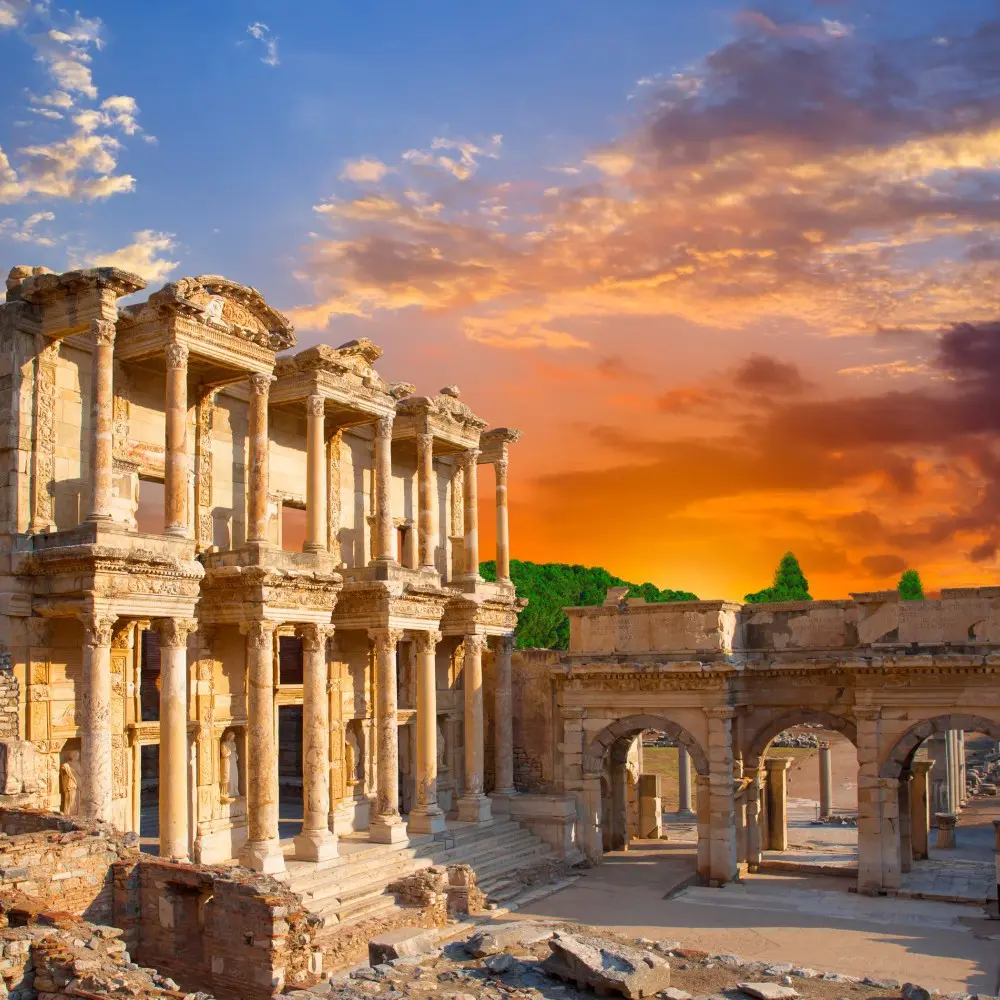
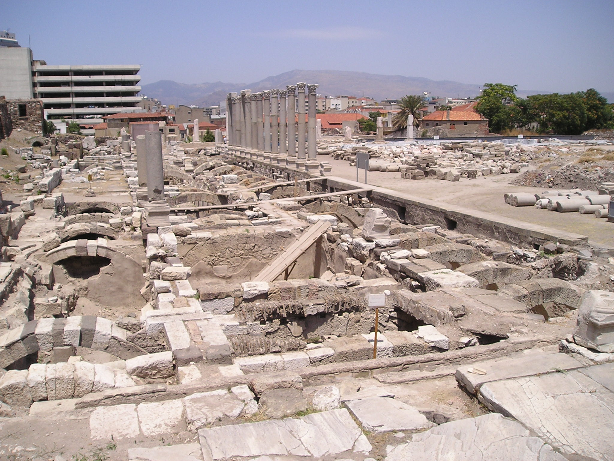
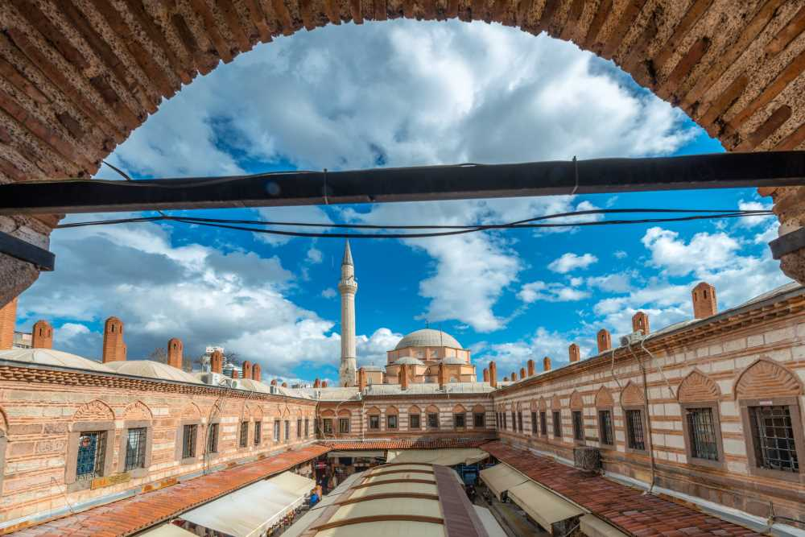
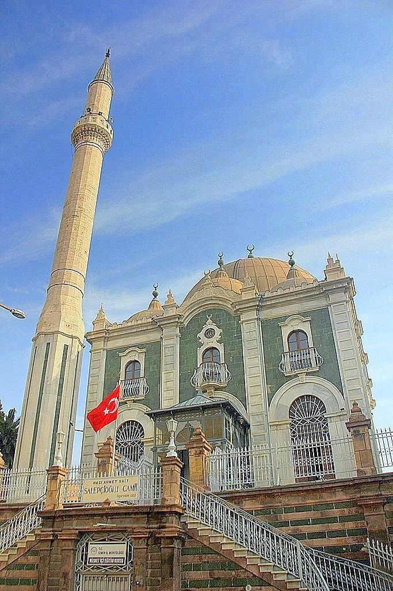
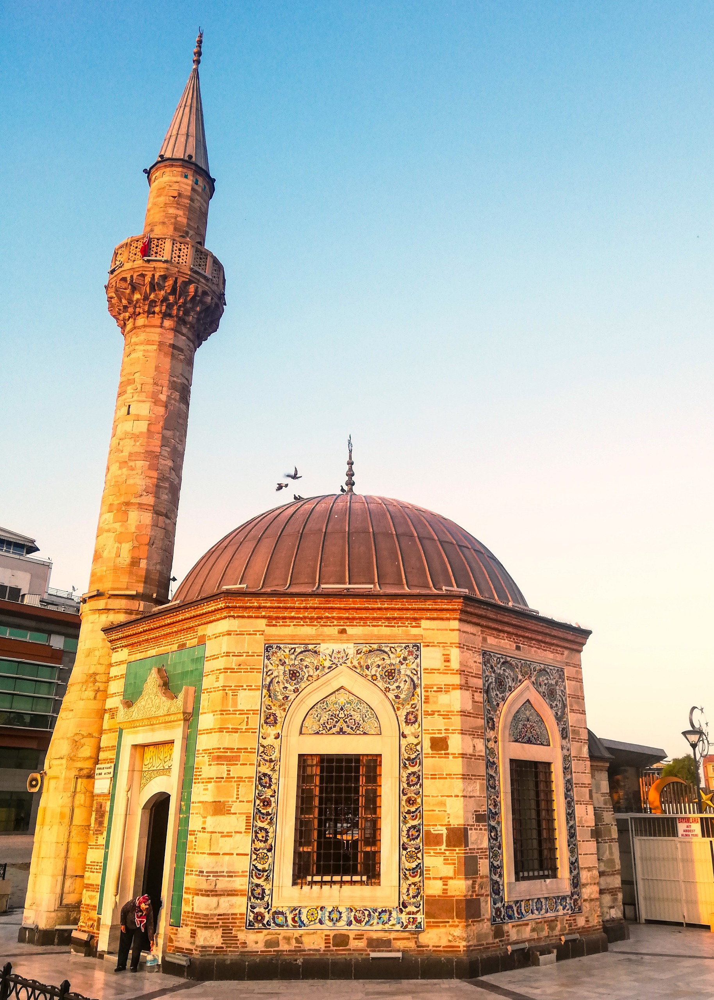

İzmir Kültürel Yerler
Ege'nin İncisi
Müzeler

İzmir Arkeoloji Müzesi
Ege bölgesinin zengin arkeolojik eserlerini sergileyen müze.

Atatürk Müzesi
Mustafa Kemal Atatürk'ün İzmir'de kaldığı tarihi ev.

Etnografya Müzesi
İzmir'in kültürel mirasını yansıtan etnografik eserler.
Tarihi Yapılar

Efes Antik Kenti
UNESCO Dünya Mirası Listesi'nde yer alan antik kent.

İzmir Agorası
Roma döneminden kalma antik pazar yeri.

Kadifekale
Helenistik dönemden kalma tarihi kale.
Tarihi Camiler

Hisar Camii
İzmir'in en büyük ve en eski camisi.

Salepçioğlu Camii
Osmanlı döneminden kalma tarihi cami.

Konak Camii
İzmir'in simgelerinden, 18. yüzyıldan kalma cami.